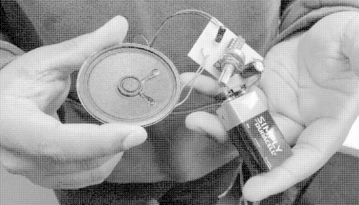

graphics style
One style for each kind of picture. They share the logo's grammar: a crisp black line, filled with pixel noise. This page shows each one, so we can see them side by side before we commit.
photos: dithered
Photos get dithered into two or a few brand colours. It makes photos from different phones and people look like a set. These are made live from the original by js/dither.js; use the dither tool to convert your own.

Your browser blocks reading image pixels on pages opened straight from a file. View this page through a local web server or on GitHub Pages to see the dithered versions.
synths and diagrams: line + noise
Clean black lines, all the same weight, with noise filling one or two parts, like the tick inside the logo's ring. Labels are real text in Courier, never drawn into the picture. Quick to make in Inkscape: download the drawing below and open it.
components
The same rules at small sizes. Noise goes on the part's body, never behind its label.
icons: pixel art
Proper pixel art only for small things: icons, the favicon, stickers. At these sizes it reads well. These two are 16 × 16, shown at real size and enlarged.
which style, when
| Picture | Style | Tools |
|---|---|---|
| Photos | Dithered, black + magenta or black + green | The dither tool |
| Synths, diagrams, components | Black line + noise fill in one or two parts | Inkscape; trace KiCad or FreeCAD exports for accuracy |
| Icons, favicon, stickers | Pixel art, 16 × 16 or 32 × 32, logo colours | Pixelorama (free), Aseprite |
| Zines, handouts | Hand-drawn, scanned, then dithered | Pen and paper, then the dither tool |
- Every label and value is real text, not drawn into the picture or set in a pixel font.
- No text on top of noise.
- Lines are all one weight (5 px at full size), with round ends.
- Noise in one or two parts of a drawing, not everywhere.
- Every picture has alt text that says what it shows, e.g. which parts a diagram labels, not just "diagram".